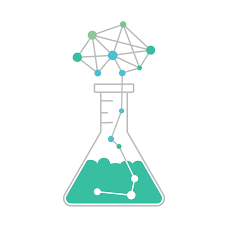
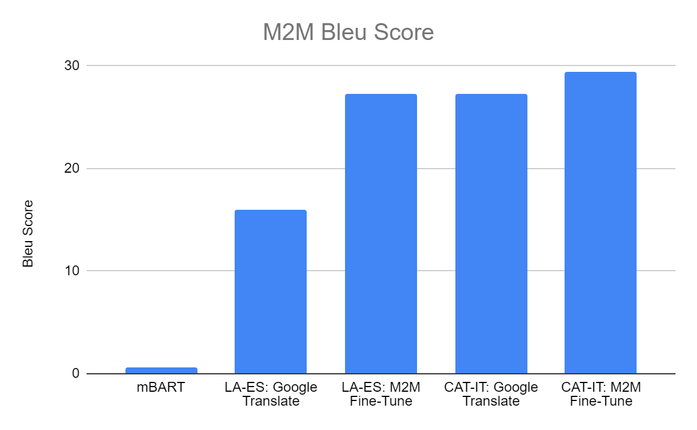
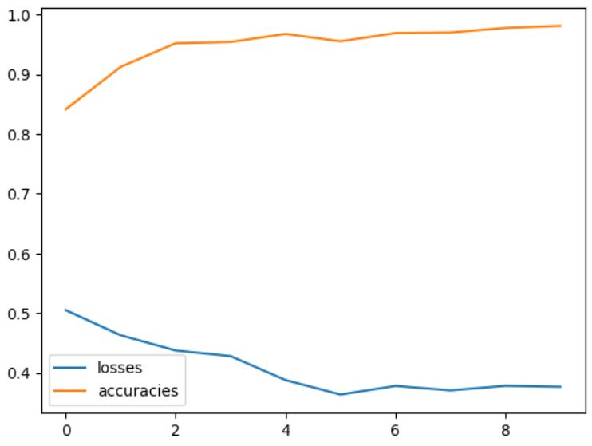
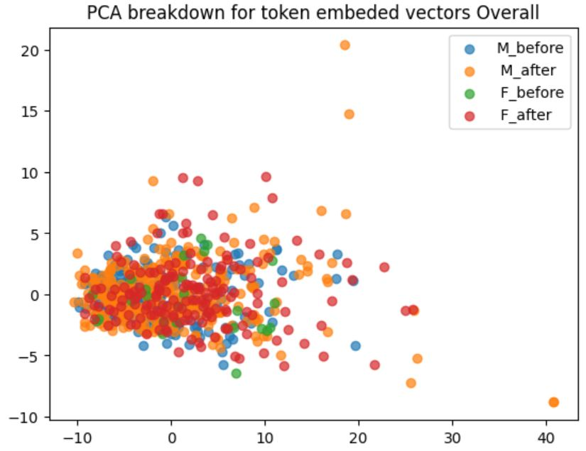
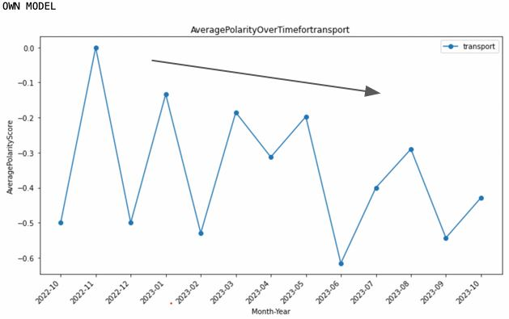
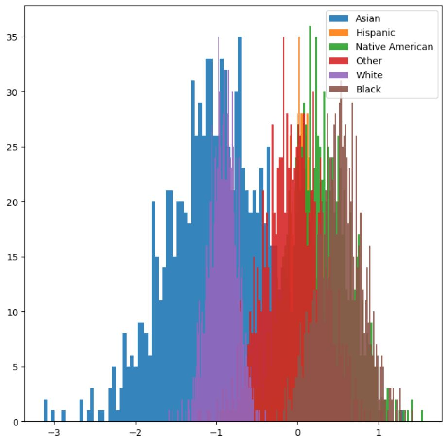

Projects

Barrage Survival Z
Project Content

Dwarven Defense Game
Project Content
Chemistry and Data Science
MPS Project at Cornell

Improving Model Performance on Low Resource Languages
Advanced Natural Language Processing for Humanities Research
Key Words: Fairseq Scripting, Training/Testing Models in Hugging Face
Summary: Addressed low-resource language data scarcity by training an accessible model on one T4 GPU for the Latin-to-Spanish language pair, outperforming Google Translate.

Using a CNN to Predict Positivity in IMDB Reviews
Data Analytics for InfoSci, INFO 3950
Skills and Concepts: Creating and training NN in Python using PyTorch, numpy
Summary: Built and compared multiple neural networks against a logistic regression baseline on IMDB review data (label: positive/negative). Using backpropagation, dropouts, and varied output layers over 20 epochs, the best model hit 98% training accuracy and 84% test accuracy. The CNN underperformed compared to simpler architectures on this task.

Examining Impact of Seneca Falls Convention
Text Mining for Hist and Lit, INFO 3350
Skills and Concepts: NLP in Python using SpaCy
Summary: Analyzed a historical American corpus (early 1700s–late 1800s) to measure the Seneca Falls Convention's linguistic impact. Created word embeddings in SpaCy for text before and after the convention, split by author gender. Vector similarities showed no statistical significance, but t-test values showed a clear shift.

r/Cornell Sentiment — Cornell Data Journal
Project Lead, NLP Research Project
Key Words: Reddit Scraping (PRAW), Sentiment Analysis, kNN Classification
Summary: Led a team of 4 to analyze r/Cornell posts for negative sentiment on topics like transportation. Scraped Reddit with PRAW; when an initial SpaCy sentiment approach proved inaccurate, manually labeled 800 data points and trained a kNN model instead. Validated findings with a 100-response survey and presented results at a symposium.

Factors Leading to False Incarcerations
Intro to Data Science, INFO 2950
Skills and Concepts: ETL, OLS, scikit-learn, bootstrapping
Summary: Examined false incarceration data to identify factors affecting time to exoneration. Variables included race, state, and crime type. Bootstrapped logistic regression betas reveal wide variation across racial groups and illustrate the confidence intervals on those estimates.